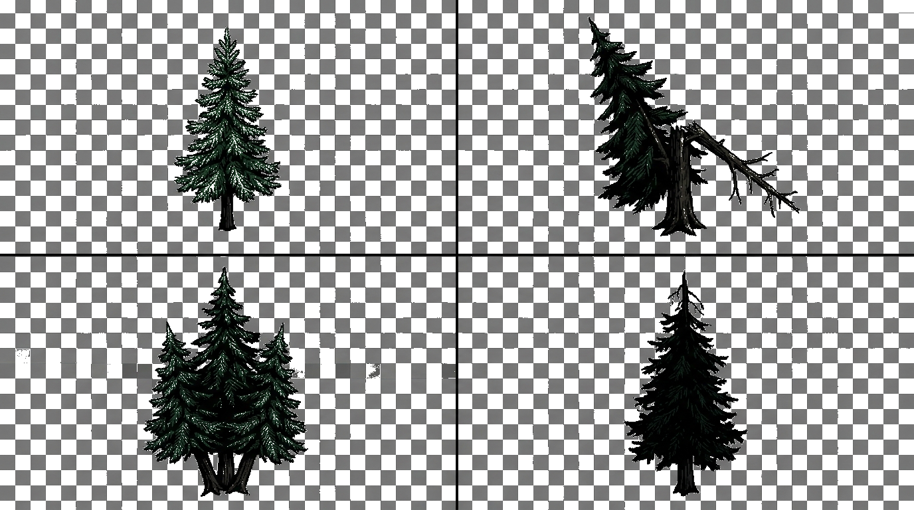

← Назад
TALES FROM THE ДЕД · Карта v2 · 1930–1991, застывшая в советской паузе

КОЛОДЕЦ
ИЗБА ДЕДА
ПОГРЕБ
ДОМ КОЛИ
ДОМ АЛЁНКИ
МИЛА И ВИТЕК
БАНЯ
ДЕРЕВНЯ ПОКРОВКА
Наведи курсор на дом. Послушай, что внутри. Не задерживайся у колодца слишком долго.